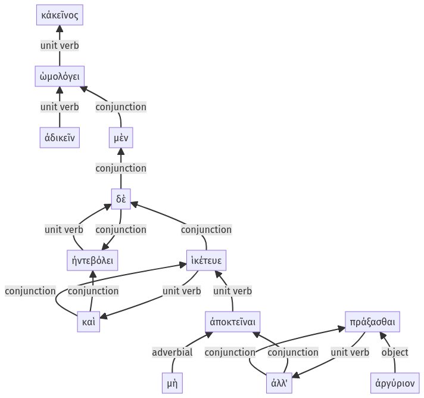

Lysias, Oration 1, 1.25.26-1.25.38a
1.25.1-1.25.25a | 1.25.39-1.26.37a
Sentence 71
1.25.26-1.25.38a
κἀκεῖνος ἀδικεῖν μὲν ὡμολόγει, ἠντεβόλει δὲ καὶ ἱκέτευε μὴ ἀποκτεῖναι ἀλλ' ἀργύριον πράξασθαι.
1 κἀκεῖνος
2 ἀδικεῖν
1 μὲν ὡμολόγει
1 ἠντεβόλει δὲ καὶ ἱκέτευε
2 μὴ ἀποκτεῖναι
2 ἀλλ' ἀργύριον πράξασθαι
κἀκεῖνος ἀδικεῖν μὲν ὡμολόγει, ἠντεβόλει δὲ καὶ ἱκέτευε μὴ ἀποκτεῖναι ἀλλ' ἀργύριον πράξασθαι.
Highlighting:
- connecting words
- unit verb
- subject
- object
Color code:
- independent clause (level 1, transitive verb)
- independent clause (level 1, transitive verb)
- independent clause (level 1, transitive verb)
- infinitive in indirect statement (level 2, transitive verb)
- infinitive in indirect statement (level 2, transitive verb)
- infinitive in indirect statement (level 2, transitive verb)
